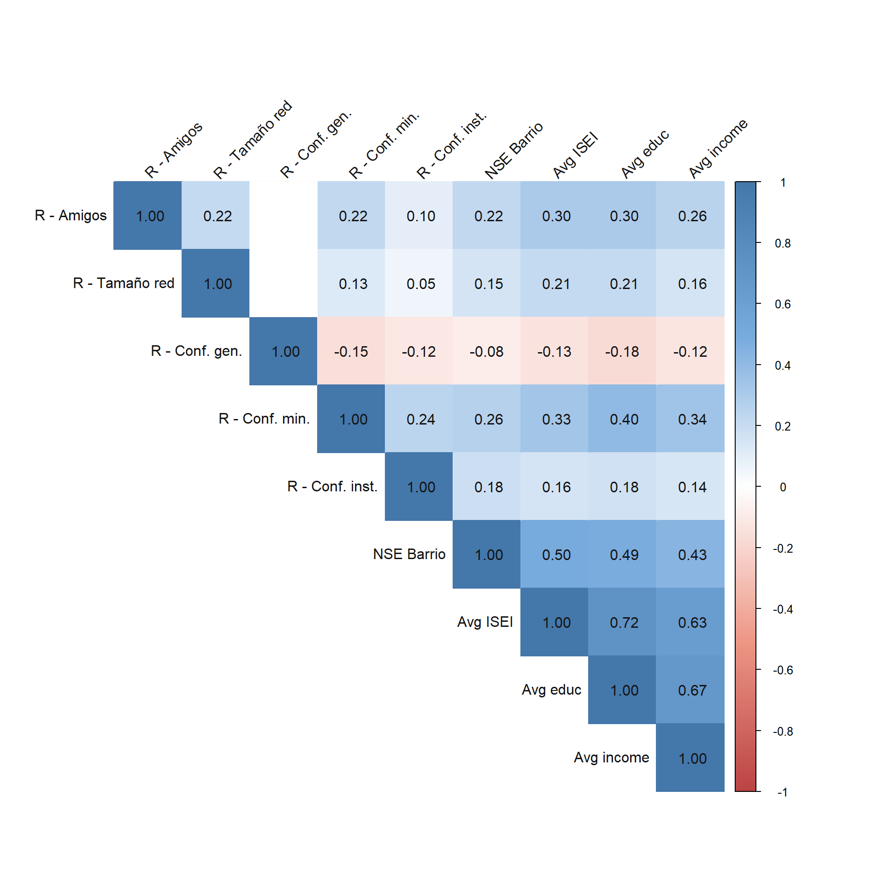
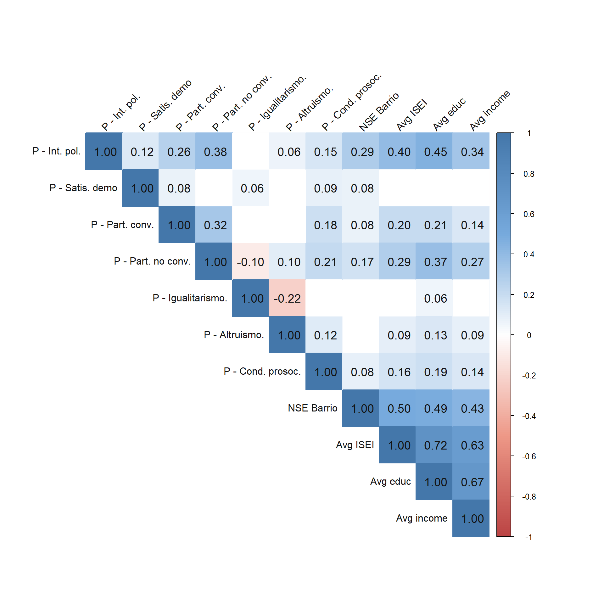
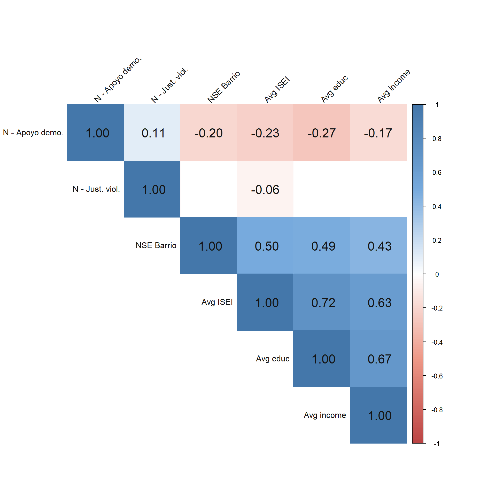

Exploratory analysis - DV’s
Exploratory analysis - DV’s
Introduction
This document present the descriptive analysis for the article about residential segregation and attachment to society.
Analysis
Main variables - Correlations
Data Frame Summary
varsdep
Dimensions: 1386 x 19
Duplicates: 0
| Variable | Stats / Values | Freqs (% of Valid) | Graph | Missing |
|---|---|---|---|---|
| identification [numeric] |
Mean (sd) : 4.1 (0.8) min < med < max: 1 < 4 < 5 IQR (CV) : 1 (0.2) |
1.00 : 29 ( 2.1%) 1.50 : 3 ( 0.2%) 2.00 : 28 ( 2.0%) 2.50 : 13 ( 0.9%) 3.00 : 86 ( 6.2%) 3.50 : 69 ( 5.0%) 4.00 : 690 (49.8%) 4.50 : 108 ( 7.8%) 5.00 : 360 (26.0%) |
I IIIIIIIII I IIIII |
0 (0.0%) |
| friends [haven_labelled, vctrs_vctr, double] |
Mean (sd) : 2.7 (1.2) min < med < max: 1 < 3 < 5 IQR (CV) : 1 (0.4) |
1.00 : 267 (19.3%) 1.50 : 1 ( 0.1%) 2.00 : 345 (24.9%) 3.00 : 454 (32.8%) 4.00 : 192 (13.9%) 5.00 : 127 ( 9.2%) |
III IIII IIIIII II I |
0 (0.0%) |
| size_network [numeric] |
Mean (sd) : 2.4 (1.7) min < med < max: 0 < 2 < 5 IQR (CV) : 3 (0.7) |
0 : 205 (14.8%) 1 : 292 (21.1%) 2 : 247 (17.8%) 3 : 239 (17.2%) 4 : 130 ( 9.4%) 5 : 273 (19.7%) |
II IIII III III I III |
0 (0.0%) |
| gen_trust [haven_labelled, vctrs_vctr, double] |
1. [-999] No Responde 2. [-888] No Sabe 3. [-777] Valor perdido por 4. [-666] Valor perdido por 5. [1] Casi siempre se puede 6. [2] Casi siempre hay que 7. [3] Depende |
0 ( 0.0%) 0 ( 0.0%) 0 ( 0.0%) 0 ( 0.0%) 156 (11.3%) 1164 (84.0%) 66 ( 4.8%) |
II IIIIIIIIIIIIIIII |
0 (0.0%) |
| trust_minorities [numeric] |
Mean (sd) : 2.9 (0.9) min < med < max: 1 < 3 < 5 IQR (CV) : 1.5 (0.3) |
25 distinct values | : : . : . : . : . : : : : : : : : : : : : . |
0 (0.0%) |
| trust_inst [numeric] |
Mean (sd) : 1.7 (0.7) min < med < max: 1 < 1.5 < 5 IQR (CV) : 1.2 (0.4) |
19 distinct values | : : : : : . : : : . . |
0 (0.0%) |
| interest_pol [haven_labelled, vctrs_vctr, double] |
Mean (sd) : 2.1 (1.2) min < med < max: 1 < 2 < 5 IQR (CV) : 2 (0.6) |
1.00 : 669 (48.3%) 1.50 : 1 ( 0.1%) 2.00 : 262 (18.9%) 3.00 : 236 (17.0%) 4.00 : 141 (10.2%) 5.00 : 77 ( 5.6%) |
IIIIIIIII III III II I |
0 (0.0%) |
| satisf_demo [haven_labelled, vctrs_vctr, double] |
Mean (sd) : 2.1 (1.1) min < med < max: 1 < 2 < 5 IQR (CV) : 2 (0.5) |
1.00 : 540 (39.0%) 2.00 : 394 (28.4%) 2.50 : 1 ( 0.1%) 3.00 : 287 (20.7%) 3.50 : 2 ( 0.1%) 4.00 : 122 ( 8.8%) 5.00 : 40 ( 2.9%) |
IIIIIII IIIII IIII I |
0 (0.0%) |
| conv_particip [numeric] |
Mean (sd) : 1.2 (0.3) min < med < max: 1 < 1 < 3 IQR (CV) : 0.4 (0.2) |
13 distinct values | : : : : . . : : : |
0 (0.0%) |
| unconv_particip [numeric] |
Mean (sd) : 1.4 (0.6) min < med < max: 1 < 1 < 5 IQR (CV) : 0.7 (0.5) |
13 distinct values | : : : : . : : . . |
0 (0.0%) |
| egalitarianism [numeric] |
Mean (sd) : 2 (0.7) min < med < max: 1 < 2 < 5 IQR (CV) : 1 (0.4) |
13 distinct values | : : . : : : . : : . : . . |
0 (0.0%) |
| altruistic [numeric] |
Mean (sd) : 4.2 (0.6) min < med < max: 1 < 4 < 5 IQR (CV) : 1 (0.1) |
1.00 : 5 ( 0.4%) 1.50 : 2 ( 0.1%) 2.00 : 7 ( 0.5%) 2.50 : 7 ( 0.5%) 3.00 : 55 ( 4.0%) 3.50 : 45 ( 3.2%) 4.00 : 735 (53.0%) 4.50 : 161 (11.6%) 5.00 : 369 (26.6%) |
IIIIIIIIII II IIIII |
0 (0.0%) |
| prosoc_behave [numeric] |
Mean (sd) : 1.7 (0.6) min < med < max: 1 < 1.5 < 3 IQR (CV) : 1 (0.4) |
1.00 : 389 (28.1%) 1.50 : 345 (24.9%) 2.00 : 444 (32.0%) 2.50 : 76 ( 5.5%) 3.00 : 132 ( 9.5%) |
IIIII IIII IIIIII I I |
0 (0.0%) |
| democracy_support [haven_labelled, vctrs_vctr, double] |
Mean (sd) : 1.7 (1) min < med < max: 1 < 1 < 4 IQR (CV) : 2 (0.6) |
1.00 : 837 (60.4%) 2.00 : 174 (12.6%) 3.00 : 292 (21.1%) 3.50 : 1 ( 0.1%) 4.00 : 82 ( 5.9%) |
IIIIIIIIIIII II IIII I |
0 (0.0%) |
| justif_violence [numeric] |
Mean (sd) : 2 (0.8) min < med < max: 1 < 1.7 < 5 IQR (CV) : 1 (0.4) |
13 distinct values |
|
0 (0.0%) |
| nse_barrio [numeric] |
Mean (sd) : 0.5 (0.2) min < med < max: 0 < 0.5 < 1 IQR (CV) : 0.2 (0.4) |
389 distinct values | : . : : : . : : : : : : : : . . : : : : : . : . |
0 (0.0%) |
| avg_isei [numeric] |
Mean (sd) : 38.1 (13.8) min < med < max: 14 < 35.4 < 86 IQR (CV) : 18.6 (0.4) |
259 distinct values | . : : : : : : : . . : : : : : : : : : : : : : |
0 (0.0%) |
| avg_educ [numeric] |
Mean (sd) : 3 (1.2) min < med < max: 1 < 3 < 5 IQR (CV) : 2 (0.4) |
13 distinct values | : : : : : : . : : . : : : : : : : : : : : : : : : : : |
0 (0.0%) |
| avg_income [numeric] |
Mean (sd) : 13.3 (0.7) min < med < max: 10.9 < 13.2 < 15.5 IQR (CV) : 0.8 (0.1) |
345 distinct values | : : . : : . : : : : : : : : : : . |
0 (0.0%) |



In the cultural dimension, it is noteworthy that all correlations between identification with society and the independent socioeconomic variables are weak and negative. For example, as the socioeconomic level of the neighborhood increases, identification with society decreases (r = -.11). This result provides evidence contrary to H1.
In the relational dimension, most of the coefficients between the independent variables of socioeconomic status and the dependent variables are positive and weak. Regarding the socioeconomic status of the neighborhood, the largest coefficient is found with trust in social minorities (r = .24). This means that the correlation coefficients show evidence in favor of H1 for trust in social minorities, as well as for the number of friends, network size, and institutional trust. The only indicator that goes against the proposed hypothesis is that of generalized trust, where the higher the socioeconomic level of the neighborhood, the lower the generalized trust of the people (r = -.08).
In the political dimension, all statistically significant coefficients show a positive and mild to moderate relationship with the indicators. In terms of the socioeconomic level of the neighborhood, the largest coefficient is found with interest in politics (r = .29). In other words, interest in politics, satisfaction with democracy, conventional participation, unconventional participation, and prosocial behaviors all provide evidence for H1. The coefficients of neighborhood SES with egalitarianism and altruism are not statistically significant.
Finally, in the normative dimension, it is noteworthy that statistically significant relationships are found mainly between support for democracy and the independent variables of socioeconomic status, but not with the justification of violence. Considering that the scale of support for democracy is inverted, the relationship between the socioeconomic status of the neighborhood and support for democracy shows that the higher the SES, the lower the support for non-democratic regimes. Therefore, providing evidence for H1.
METHODOLOGICAL NOTHES:
Generlized trust must be recodified, the inermediate category is on 3 and not on 2. This indicator must be recoded.
Democracy support is inverted. The greater number (4) represents less support for democracy (4 = None). This indicator must be inverted.
Egalitarianism is inverted. The sentences in the questionarie are unjust situation, so a bigger degree of agreement it means less egalitarian. This indicador must be inverted.
Justification of violence is inverted. The greater number (5) represents more justification towards the violence situation. This indicator must be inverted.